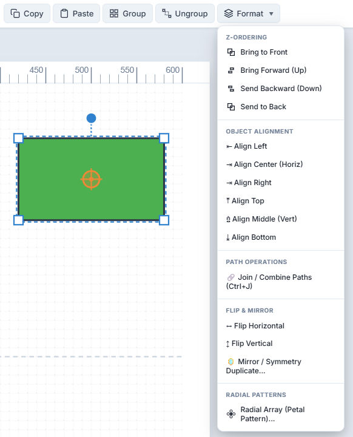
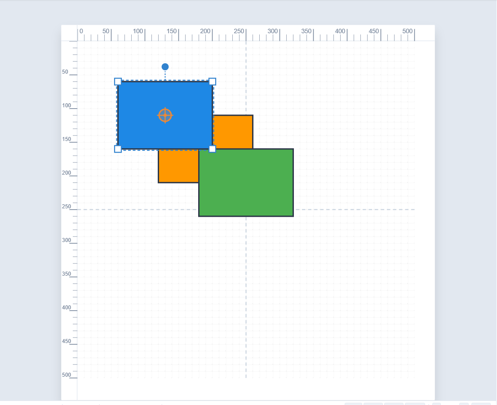
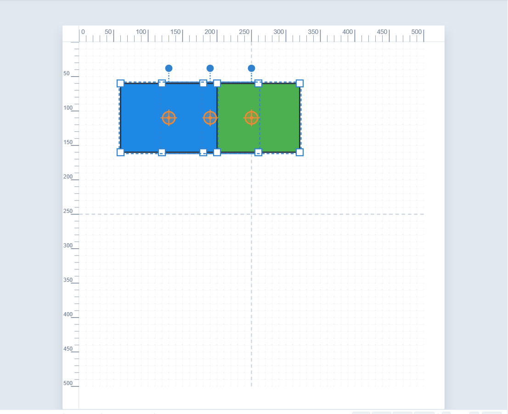
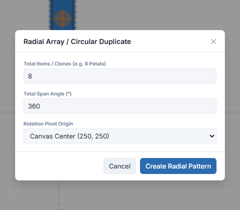
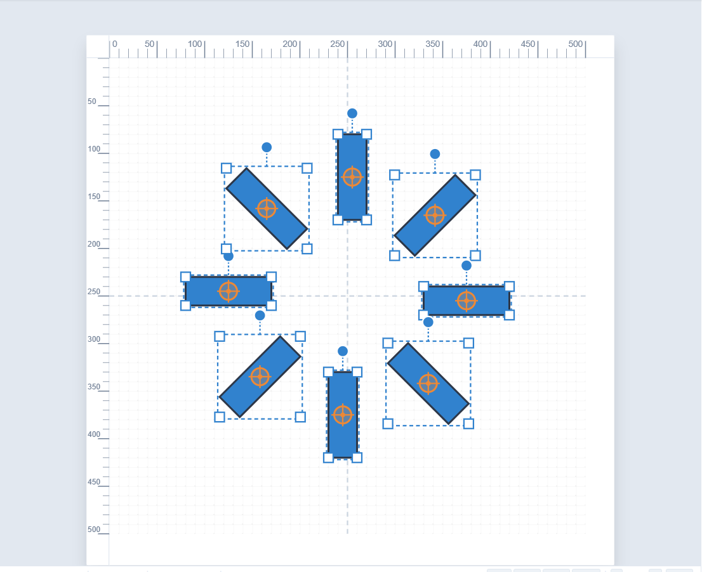

SimpleVG › Tutorial › Chapter 8
Once a drawing has more than a few shapes, arranging them becomes the main job. Almost everything for it lives in the Format menu in the menu bar.
Draw three overlapping rectangles in different colours, then click Format.

Shapes stack in the order they were drawn, with the newest in front. The first four commands change that:
Select the blue rectangle at the back and choose Bring to Front. It now covers the others.

The Format menu also holds Align Left, Center, Right, Top, Middle and Bottom. What they do depends on how many shapes are selected:
Press Ctrl+A to select everything, then choose Align Top.

Flip Horizontal (Ctrl+Shift+H) and Flip Vertical (Ctrl+Shift+V) turn the selection over in place. The Inspector also has quick Horiz and Vert flip buttons.
Mirror / Symmetry Duplicate goes a step further: it makes a mirrored copy beside the original, to the right, left, above or below, or across the centre. It is the quick way to build anything symmetrical, such as a pair of valves or a two-sided fitting. Draw one half, then mirror it.
A Radial Array repeats a shape around a circle. It is perfect for fan blades, gauge tick marks, bolts around a flange or petals.
Draw one thin rectangle, select it and choose Format > Radial Array (or press Ctrl+Shift+D).

Click Create Radial Pattern and the copies are laid out evenly.

You can also turn a selection a step at a time: Ctrl+R rotates 15° clockwise and Ctrl+U rotates 15° anti-clockwise, around the pivot.
In the next chapter we trace over an existing picture to turn it into clean vector shapes.